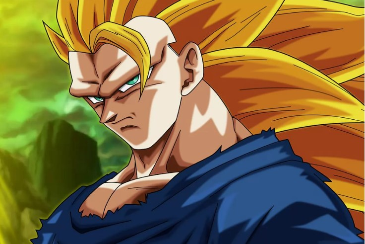
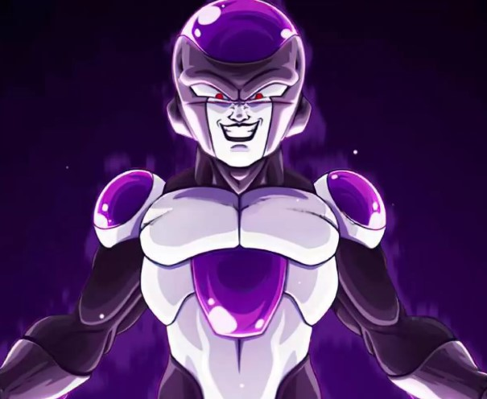
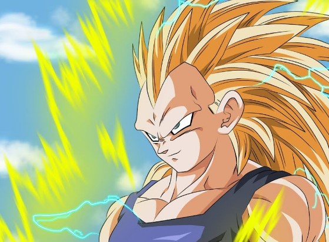

Articulos

Goku
Super Saiyan
La transformación Supersaiyano posee diferentes niveles o estados por lo que su apariencia cambiará dependiendo la forma que se utilice. En todas sus variantes el saiyano mantendrá una forma humanoide, a diferencia de su otra transformación.

Freezer
Black
Freezer nos mostró durante la época de Namek tres transformaciones hasta llegar a su forma definitiva, con la que Goku estuvo luchando largo y tendido y a la que derrotó finalmente al transformarse en Super Saiyan por primera vez.

Vegeta
Super Saiyan
A pesar de que a inicios de Dragon Ball Z, Vegeta cumple un papel antagónico, poco después decide rebelarse ante el Imperio de Freezer, volviéndose un aliado clave para los Guerreros Z.